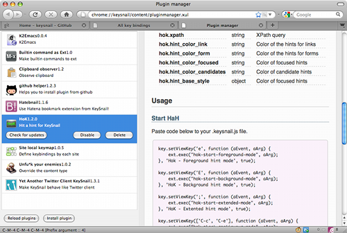
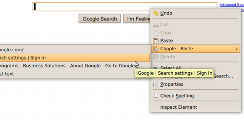

mooz deceives you
(eval mooz) ; => nil
Products
Add-ons for Mozilla apps
KeySnail
KeySnail is an add-on for Mozilla Firefox and Thunderbird which allows you to customize their keybindings. Initially KeySnail is developed to be the replacement of keyconfig and Firemacs. Now, KeySnail has grown up dramatically and states that KeySnail is the Vimperator for Emacs users.
Clipple
Clipple is the simple clipboard manager for Mozilla Firefox which allows you to store multiple texts to the extended clipboard.
JavaScript Experiments
MiSPLi

MiSPLi is the Lisp implementation and REPL written in JavaScript. It has static-scoping, lexical-closure, macro, basic special forms, basic functions and so forth.
C.H.A.O.T.I.C C.A.N.V.A.S

C.H.A.O.T.I.C C.A.N.V.A.S is the chaos fractal generator written in JavaScript which uses HTML canvas.
Emacs Lisp
js2-mode.el (forked)

An improved JavaScript mode for GNU Emacs. Forked from http://code.google.com/p/js2-mode/.
js-doc.el

js-dec.el helps you to treat JsDoc style comment in Emacs.